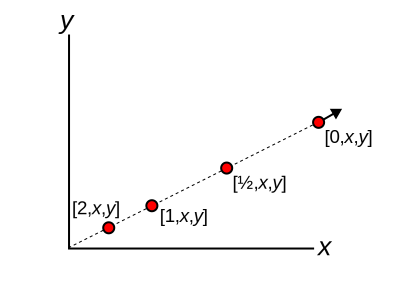
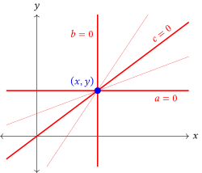

Optics in Homogeneous Coordinates, Imaging Points
Picking up from last time…

In the first post I defined an oriented line by considering the equation of a line in 2D: \(ax+by+c = 0\). This gave us new 3×3 matrices for describing our optical system that contain the traditional ABCD matrices as a subset, with these new matrices acting on ray vectors of the form \((c,a,b)\). (I had to shuffle the order to match the old-school ABCD matrices.)
\[ \begin{pmatrix} c' \\\ a' \\\ b' \end{pmatrix} = \begin{pmatrix} A & B & 0 \\\ C & D & 0 \\\ 0 & 0 & 1 \end{pmatrix} \begin{pmatrix} c \\\ a \\\ b \end{pmatrix}. \]
The second post showed that the extra degrees of freedom gained by upgrading to 3×3 (the third row and column in the matrix above) also let us move and rotate our optical elements: we’re no longer confined to being centered on and normal to a single optical axis.
In this post, I show a little slight of hand using projective geometry2,3 that lets us reframe our matrices as transformations of points rather than rays. In other words, we can do imaging calculations directly from the matrices without going through the usual process of tracing rays.
Homegenous representation of points
We began this whole discussion by writing our equation for a line as \(ax+by+c = 0\), giving us three homogenous coefficients describing the line: \(\vec{r}=(c,a,b)\). The line is the set of points \([x,y]\) that solve the equation. (I’ll use square brackets for points and round brackets for lines). It would be nice to have a 3rd coefficient for our points, as well, so let’s just add one: \(\vec{p}=[w,x,y]\), where up until now we’ve always had \(w=1\). With these two setups for lines and points, we can re-express the line equation as a simple vector equation:
\[ ax+by+cw=0\quad\rightarrow\vec{r}\cdot\vec{p}=0 \]
Normalization of points
We can muliply our point vector with any non-zero scalar and still satisfy the line equation, so this \([w,x,y]\) is indeed a homogeneous representation of a point. Our most typical case is when \(w=1\), so we’ll pick this as our normalization convention for points. In other words, if \(w\neq1\), divide by \(w\) to get the “real” values (physical locations) of \(x\) and \(y\).
Ideal points
What happens if we let w go to zero? Think of this in the limit as we gradually reduce the value of w while x and y are fixed. The new normalized point would be \([1,{x}/{w},{y}/{w}]\), which would move further and further away from the origin. See the figure below.

In the limit \(w\rightarrow 0\), the point does off to infinity in a particular direction. We can think of \([0,x,y]\) either as that direction and not a physical point or as a physical point effectively infinitely far away (e.g. a distant star being viewed by a telescope).
Projective duality
Now that we have defined points and lines on equal algebraic footing, let’s go back and look at the line equation:
\[ ax+by+cw=0. \]
Our habit is to interpret this as the points \([w,x,y]\) that lie on the (fixed) line \((c,a,b)\), but the dual interpretation is also valid: the equation represents all of the lines \((c,a,b)\) that pass through the (fixed) point \([w,x,y]\) (see figure below).

If we take this idea and extrapolate as far as possible, we get the Principle of Projective Duality. The two-dimesional version of this says that any relationship between lines implies a corresponding relationship between points (and vice versa). Importantly for us, if our 3×3 ray matrices provide a rule for transforming rays (lines) from the object space to the image space of our optical system, then duality tells us that a similar rule must apply to points.
Great! But what’s the rule for points?
The point transfer matrices
Let’s go back to our line equation. I’ll use the vector form to save some writing:
\[ \vec{p}\cdot\vec{r}=0. \]
If we have an intersecting ray and point described by the equation above, if we project those through our optical system their images should still intersect. The image of the point will not become disconnected from the image of the ray. If I use primes to indicate the images, mathematically we should have
\[ \vec{p'}\cdot\vec{r'}=0. \]

We know what the new ray vector image is because we know the matrix for the optical system, M. That gives us
\[ \vec{r'} = M\vec{r}. \]
We’d like a similar rule for points. It should also be a linear function, so it should be a new matrix, which I’ll represent by \(M_p\) and call the point transfer matrix (PTM). (In the paper I use overbar-M, but that isn’t displaying correctly here.) That rule will be
\[ \vec{p'} = M_p \vec{p}, \]
but we don’t know \(M_p\) yet. Let’s stick with it anyway and plug the image of the ray and the image of the point into the incidence equation:
\[ \vec{p'}\cdot\vec{r'}=0\quad\rightarrow\quad (M_p\vec{p})\cdot(M\vec{r}) = 0. \] Evaluating the dot product as a row vector times a column vector by using a transpose operation (T), and then rearranging we get
\[ \begin{gathered} (M_p\vec{p})^T(M\vec{r}) = 0, \\ \vec{p}^T M_p^T M \vec{r} = 0. \end{gathered} \] This equation can only be true if either \(M_p^TM=0\) (which would be boring) or if \(M_p^TM\) is proportional to the identity matrix:
\[ \begin{gathered} M_p^TM = k I, \\ M_p = k (M^{-1})^T, \end{gathered} \] where k is some non-zero constant. Because we’re using homogenous representations for our point, the value of k doesn’t matter, but if we’re being picky we can show from other arguments that its actual value is \(k=\det(M)\).
In particular, if we know the ABCD matrix, the corresponding point transfer matrix is
\[ M_p = \begin{bmatrix} D & -C & 0 \\ -B & A & 0 \\ 0 & 0 & AD-BC \end{bmatrix} \]
For the tilted and decenterd examples in Part 2 the PTMs are a bit uglier, but the same algebra rules apply.
Example calculation
In the paper1 I use the PTMs to derive Gauss’s thin lens equation and do a few more examples, but my favorite aspect of this method is that we can find images (and their magnifications) without explicitly tracing rays.
As an example, we’ll take a problem from Hecht4 (note that we use a different convention for the ray transfer matrices than Hecht). Consider a compound lens system with the ray transfer matrix (length units of cm)
\[ M=\begin{pmatrix} A & B \\ C & D \end{pmatrix} = \begin{pmatrix} 0.867 & 1.338 \\ -0.198 & 0.848 \end{pmatrix}, \]
and an object 20 cm in front of the lens with a height of 0.1 cm. We would like to locate the resulting image position and height.
Hecht’s solution takes about 2 pages and involves constructing new matrices containing unknown distances, and solving for them.
Our solution is much more direct. First, we construct the point transfer matrix from the original ray transfer matrix (without additional propagations) and multiply this into the homogeneous position vector \(p=[1,x,y]^T\) for the object point. This gives us the image point \(p'\).
\[ \begin{aligned} p'= {M}_p p &= {\small \begin{bmatrix} 0.848 & 0.198 & 0 \\ -1.338 & 0.867 & 0 \\ 0 & 0 & 1 \end{bmatrix} \begin{bmatrix} 1 \\ -20.0 \\ 0.1 \end{bmatrix}},\\ &= {\small \begin{bmatrix} -3.112 \\ -18.678 \\ 0.1 \end{bmatrix}} \equiv {\small \begin{bmatrix} 1 \\ 6.002 \\ -0.032 \end{bmatrix}}. \end{aligned} \]
After performing the matrix multiplication, we only need to normalize the resulting image point vector (final step above) to read off the coordinates of the image: \({6.002}\,\mathrm{cm}\) past the lens at a height of \({-0.032}\,\mathrm{cm}\). We’ve been able to replace algebraic multiplication of matrices containing unknown variables and solving for an unknown distance with a direct numerical calculation, rather than going through Hecht’s process that requires setting up and solving some algebra equations.
Summary
Using some ideas from projective geometry[^3], we defined points using homogeneous coordinates and showed that the points have their own matrix representation for an optical system.
Why do we care? First, it gives us a shortcut for solving some imaging problems, especially if we already know the ray transfer matrix. I’ll work another extended example in the next post using the PTMs to find the entrance and exit pupils of a lens system. But more broadly, this shows that projective geometry3 is really the right environment for optics work. Some other tricks with homogenous points and lines vastly simplify things like calculating the circle of confusion for defocussed lenses, depth of field, and other things that usually result in a big algebra mess.
But wait, can’t the computer do all of this faster and better? Sure. We’re not doing full ray trancing or wave-front analysis here. We can’t see aberations or diffraction or things like that. The point is to put the geometry (well, geometry disguised as algebra) back into geometric optics.